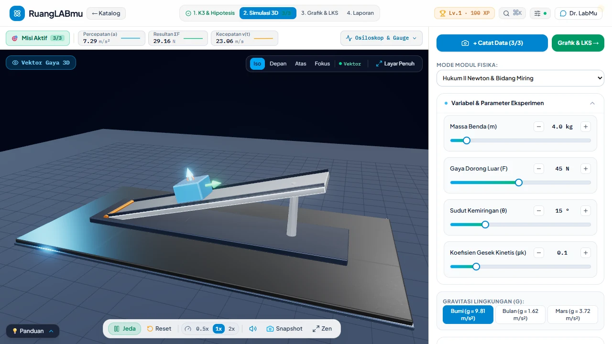

NEW • Nov 2026 28 Modul 3D • 60Hz RK4 • 50/50 Tests
3D WebGL & Socratic AI LMS
v2.1 • 2026
RuangLABmu
Masalah keterbatasan alat praktikum sekolah dijawab lewat lab virtual 3D interaktif (Fisika, Kimia, Biologi, Astronomi), solver Web Worker RK4 60Hz, serta mentor Sokratik & Vision AI (Dr. LabMu) dengan kolaborasi PIN WebSocket.
Three.js WebGL
React 19
WebSocket
Gemini Vision